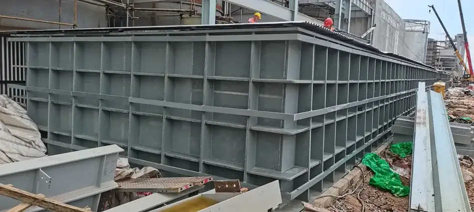
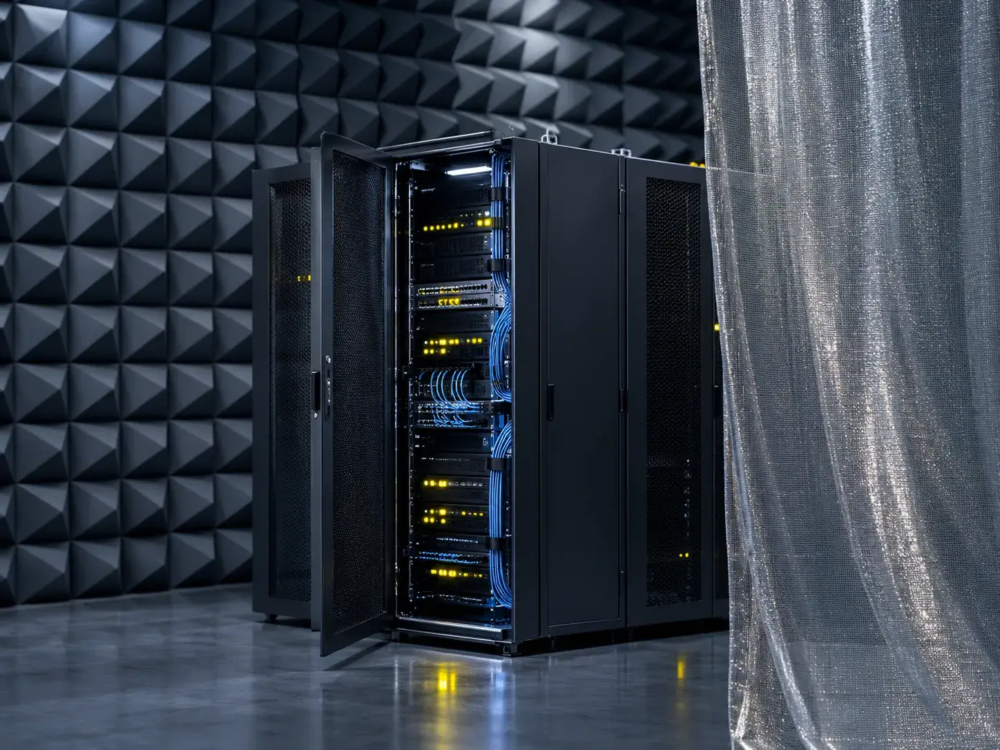
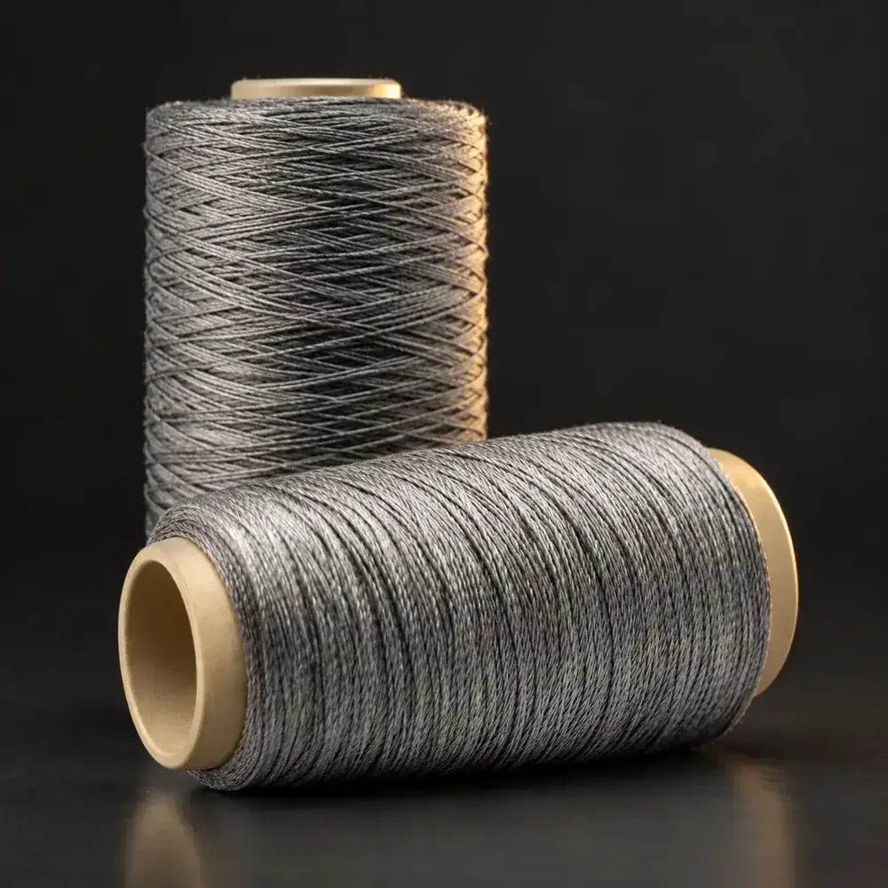

When heat, chemistry or current destroys the material you use now, metal fiber holds.
We draw stainless steel down to 2 µm and build it into yarns, technical textiles, sintered media, filter elements and separation equipment — in our own plants, to your operating conditions.

Start from your process, not our catalogue.
Buyers rarely ask what products we have. They ask whether a material will survive their furnace temperature, their solvent, their precision requirement — and for how long. So we organise everything by the conditions you run.
 Lead track
Lead trackGlass Processing
Roller sleeves, braided sleeves and woven belts that take 1100 °C, stay lint-free and leave no marks on the glass.
View solution
Highest value per accountFiltration & Separation
Cleanable, reusable all-metal media for polymer melt, viscose and hot gas — plus chemical-free oil recovery for solvent extraction.
View solution
Broadest coverageEMI Shielding & Anti-static
Conductivity comes from the fiber itself, not a coating, so anti-static and shielding performance survives repeated washing.
View solution
Specialty Materials
Porous plates, burner media and damping felts where ceramics crack under thermal shock and foams lose strength.
View solution
Automotive
From glass bending mould covers and heated seats to friction materials and hydraulic filtration.
View solution
Functional Textiles & Smart Wearables
Weavable, sewable, washable conductive and heating yarns that run on standard textile equipment.
View solutionOne material, seven forms, six properties.
Metal fiber is a platform, not a single product. The table shows which property each form is actually built for — useful when your requirement does not match a standard catalogue item.
| Product form | Conductive | High temp | Corrosion | Porous / permeable | Flexible / weavable | Damping |
|---|---|---|---|---|---|---|
| Fiber — long, chopped, tow | ||||||
| Wire & yarn — pure, blended, insulated | ||||||
| Textiles — sleeve, tape, cloth, rope | ||||||
| Felt — sintered, needled, damping | ||||||
| Plate — porous, burner, sintered mesh | ||||||
| Filter elements | ||||||
| Separation equipment |
From a 2 µm filament to a 600 m³/h skid.
Every step — drawing, sintering, spinning, weaving, element fabrication and equipment assembly — runs on our own lines, which is why specifications stay consistent batch to batch and customisation does not need a third party.

Metal Fiber & Yarn
Bundle-drawn stainless steel fiber down to 2 µm, supplied as long fiber, chopped fiber, tow, pure-metal and blended yarn.
Sintered Felt & Media
KIA3 / KIA3K / KIC4 sintered felts, 10–60 µm absolute, 72–86% porosity, cleanable and reusable.

Technical Textiles & Sleeves
Knitted and braided sleeves, woven fabrics, tapes and ropes rated 350–1100 °C.

Filter Elements
Pleated cartridges to 30 MPa, sintered mesh elements, high-temperature metal filter bags.

Oil Recovery Systems
Coalescing oil–water separation for hydrometallurgy — no demulsifiers, largest unit in service 600 m³/h.
Samples and data before you commit.
We would rather spend a sample than win an argument. Send the conditions, take the samples, run them on your own line — then decide.
Everything made in-house
Fiber drawing, sintering, spinning, weaving, element fabrication and equipment assembly are all ours — so is the responsibility when something needs to change.
Testing you can check
In-house SEM, pore-size distribution, particle analysis and filtration rigs. We send the data with the sample, not instead of it.
Standards and patents behind it
Co-drafted 5 national and 1 industry standard; 62 granted patents including 16 inventions.
Proven at industrial scale
Sintered felt supplied to China's viscose and chemical-fibre industry; oil recovery systems running at leading nickel-cobalt hydrometallurgy producers, up to 600 m³/h per unit.
Answers before the first email.
Our bundle-drawing line produces stainless steel fiber down to 2 µm. Standard alloys are 316L, 304 and 302; we also run FeCrAl, 904L, nickel-based alloys, copper and titanium. Alloy choice is driven by the service temperature and the chemistry of your medium, so tell us both and we will propose the material.
There is no minimum order for glass-processing sleeves — we can supply by the metre so you can trial them on one furnace first. Other product lines are quoted by specification and operating conditions, and we support sampling and application testing before any volume commitment.
Sintered felt filters in depth: a graded pore structure traps contaminant throughout the thickness, so differential pressure rises slowly and service intervals are long. Woven and sintered mesh filters mainly at the surface and offers higher rigidity, which suits high pressure and frequent back-flushing. Most of our filter elements combine both — felt for the rating, mesh for the structure.
No. The conductor is the stainless steel fiber itself, not a metallic coating, so there is no plated layer to crack, oxidise or wear off. Blended yarns can be laundered like ordinary fabric; anti-static and shielding performance does not decline with wash cycles.
Yes. Fiber diameter, fiber length, yarn count and twist, sleeve inner and outer diameter, filtration rating, thickness, porosity, element dimensions and end fittings are all specified to the application. Separation equipment is sized to the flow you need to treat.
Operating temperature, the medium and its chemistry, pressure or flow, the filtration rating or resistance range you need, and what the incumbent material is and how long it lasts. With those five answers we can normally come back with a configuration and a sample plan.
Send us your operating conditions, and we will send samples.
Temperature, medium, pressure, filtration rating, resistance or porosity — give us the numbers you work with and our engineers will recommend a configuration, quote it and arrange samples for your own testing.